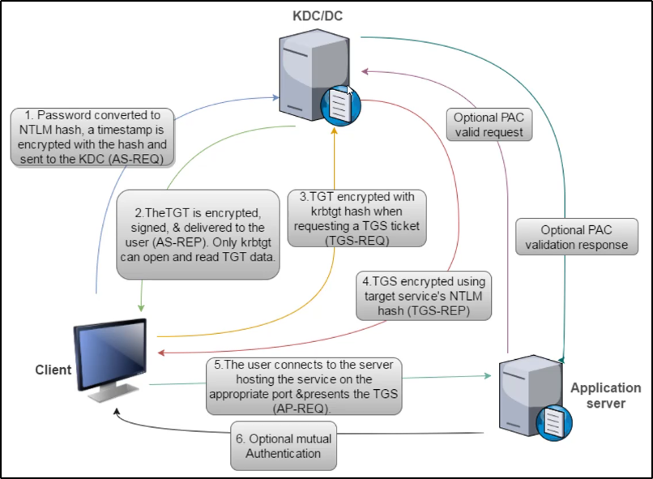

Domain Persistence
Vi è molto di più del Domain Admin nel mondo dell'Active Directory.
Una volta che siamo Domain Admin, possiamo effettuare nuove tattiche:
persistenza, scalo ad Enterprise Admin (del DC) ed attacchi cross-trust
Cerchiamo di vedere attacchi sul dominio, tra domini, foreste
e vari attacchi tramite Kerberos.
Servizio: Kerberos
Kerberos è alla base dell'autenticazione Windows AD.
E' stato molto attaccato e fixato nel tempo,
quindi col tempo ha sviluppato tante meccaniche e fix.
Ecco come funziona Kerberos:

Altre informazioni riguardo Kerberos:- Si utilizza l'hash NTLM della password per la cifratura RC4 di Kerberos
- Il Logon Ticket (TGT) provvede l'autenticazione utente verso il DC (Domain Controller)
- La policy di Kerberos è controllata SOLO QUANDO crea un TGT
- Il DC (Domain Controller) valida un account utente solo quando il TGT è maggiore di 20 minuti
- La validazione PAC (passo tra 4 e 5) dei Ticket Service (TGS) è spesse volte opzionale e rara:
- PAC sta per "Privilege Access Certificate"
- Il LSASS (Local Security Authority Sistem Service) manda una PAC validation al servizio netlogon del DC (NRPC)
- Se è avviato come servizio, la PAC Validation è opzionale (disabled)
- Se il servizio è avviato come System, performa una server signature verification sulla PAC (computer account long-term key)